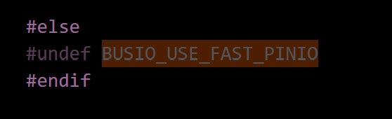
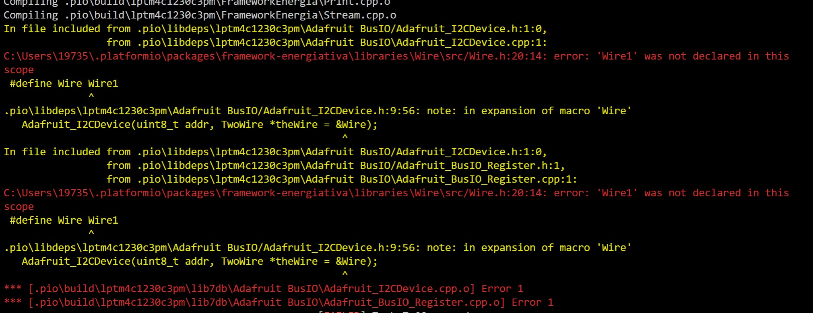
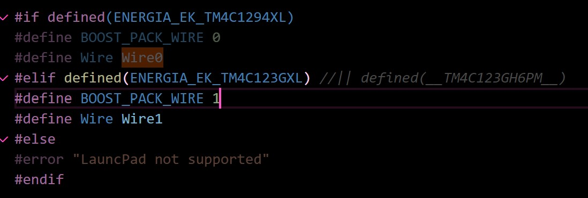
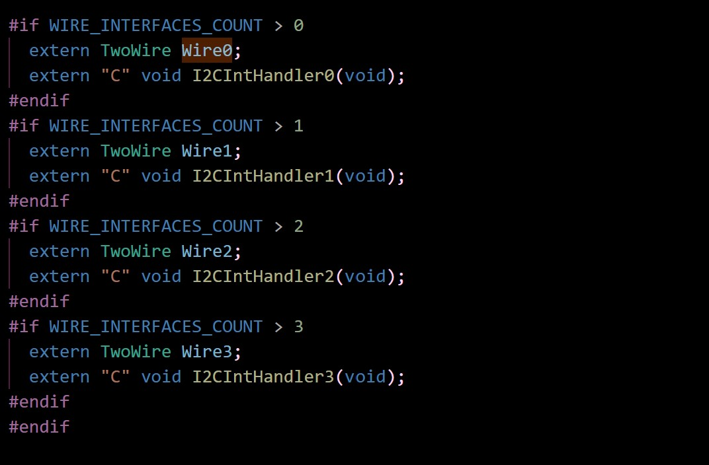
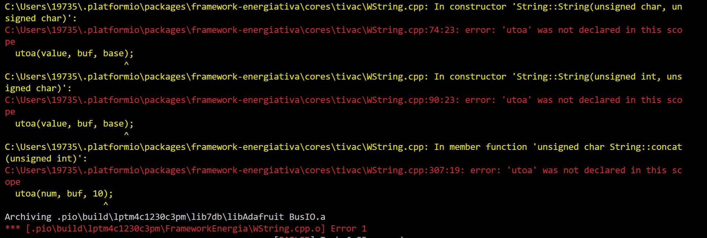
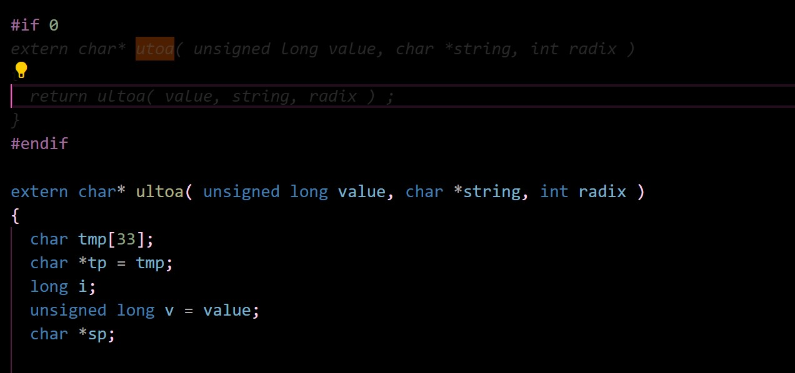
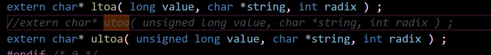
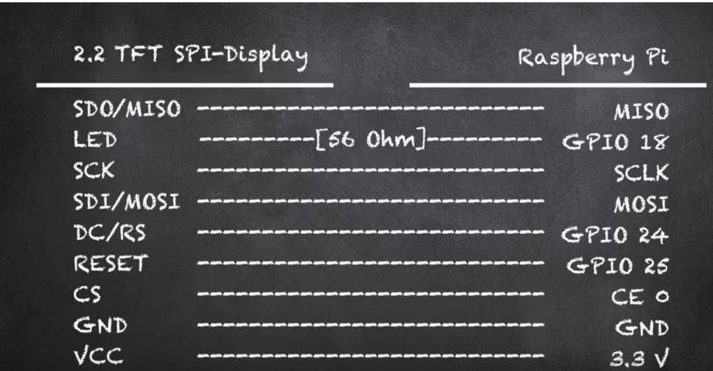
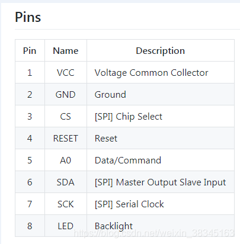

大统一之用vscode开发单片机的platformio(tft屏幕spi显示)
这回本来打算用msp432，一开始我设备那显示无驱动，我就跑去官网找 没找到。于是为了确定这个到底能不能直接用，我去云端ccs建了个工程编译烧录了一下。
但是。。过程中好像弹出来一个ccs的程序访问请求，我允许了，能烧录，回来一看设备运转正常。感觉是那个程序的原因。
但是我发现platformio不支持432。。。
所以这回还是tivac。做的是简单亮灯（初创工程）和tft屏幕spi显示（第三方库的问题）
先上pinmap
PIO初建
platformio是vscode的插件，可以全员变成arduino的框架，基本什么板子都有，统统封装成arduino的库。
vscode拓展安装platformio。安装完之后重启vscode，点外星人图标，点PIO home，新建一个project，选好板子型号和框架，生成的位置，PIO 会自动根据选择的 Board 和 Framework 配置工程并且下载需要用到的编译工具，需要的编译依赖什么的 PIO 通通帮我们搞定，一段时间过后工程就新建完成了。比如看它给我们配的配置，
这里的libdeps一开始是空的，后面有用第三方库就自己安装（后面那个是我注释的）
打开 src 文件夹下的 main.cpp，比如写一个亮灯的程序
先找引脚
点进arduino.h 这个是它根据我们的选型给弄得一个从tivac封装到arduino的库，点进energia.h 点进末尾的pins_energia.h就可以看到对应的引脚了。其实最好自己对着pinmap看，因为如果是和别的型号通用的话有的时候不一定对？
代码
#include <Arduino.h>
void setup() {
// put your setup code here, to run once:
pinMode(RED_LED, OUTPUT);
pinMode(BLUE_LED, OUTPUT);
}
void loop() {
// put your main code here, to run repeatedly:
digitalWrite(RED_LED, HIGH);
digitalWrite(BLUE_LED, HIGH);
delay(1000);
digitalWrite(RED_LED, LOW);
digitalWrite(BLUE_LED, HIGH);
delay(1000);
}

点这个√就可以编译啦，->就是烧录咯
在加一个第三方库的时候，很有可能还需要手动在ini配置里加上其依赖的第三方库
比如我现在想用TFT屏幕，就去了pio home的libraries搜tft。有个adafruit ILI9341，
就用这家的吧 adafruit做了很多库。（我是从后面回来的，其实我发现，那个adafruit ST7735的库，其实就是我手里这个tft屏幕的型号。）
选好版本，点add to project 就会自动添加到platformio.ini， 配置文件里只会添加这一个库
而libdeps会有其他四个标题添加进来，这些都是adafruit ILI9341所依赖的库。在library.properties 会写他依赖了什么。但它的依赖又会依赖别的东西，反正套娃完就是四个了
这个时候就需要我们把这其他的四个添加到ini配置里去了
看library.properties 这个文件里有这个第三方库的name和 version
看.piopm也可以。挨个找完补到配置里去
尝试编译，由于ini配置里指定了依赖，所以新加的库也都会被编译。
这个时候就有意思了，会发现，
欸？怎么还找不到wire.h和spi.h？（需要手动添加tiva官方库）
这其实是tiva的官方库。
来解释一下energia官方为了让我们能把tivac当成arduino开发提供了什么东西。
看过energia博客的应该知道，energia是TI做的一个把自己家板子包装成arduino的framework的一个平台，比如我们在用tivac的时候需要在开发板管理器那下载对应的包装
这样在示例中会有core，确保tivac可以用arduino的开发方式开发。
把文件首选项中的显示详细输出勾上
跑一个内置实例blink 会看到底下说它
Using core 'tivac' from platform in folder: C:\Users\19735\AppData\Local\Energia15\packages\energia\hardware\tivac\1.0.4
打开相应位置 ，这里就是我们在开发板管理器那下载的对应的东西
core里有arduino.h energia.h ;variants里有pins_energia.h 这些就就是我们在前面新建一个不加第三方库的时候看引脚用的。 而libraries就是 实例里多的那些tivac的库 这些都是tivac官方在energia里提供给我们的。在libraries里面有SPI,有WIFI，自然也有SPI.h WIFI.h
再来看platformio里TIVAC的官方库扮演了什么角色
也没啥，就是官方库而已，官方库和第三方库的区别. 看底下这个framework-energiativa，就是一个在板子选型的时候就已经built-in了，一个需要在registry里搜了自己安装。
至于官方这个库在选型初建工程的时候被放在哪了呢？还记得找引脚的时候的pin_energia吧，
这就是他的路径。
而就像energia里，这些库我们不选他做例程，也不会include，所以在platformio里，如果用到这些库，都是需要手动添加到ini配置里的.
现在库都添加完咯
开心的编译，结果发现出现一大堆错误呢，
说我没定义BitOrder，（需要手动宏定义带上板子型号）
// some modern SPI definitions don't have BitOrder enum
#if (defined(__AVR__) && !defined(ARDUINO_ARCH_MEGAAVR)) || \
defined(ESP8266) || defined(TEENSYDUINO) || defined(SPARK) || \
defined(ARDUINO_ARCH_SPRESENSE) || defined(MEGATINYCORE) || \
defined(DXCORE) || defined(ARDUINO_AVR_ATmega4809) || \
defined(ARDUINO_AVR_ATmega4808) || defined(ARDUINO_AVR_ATmega3209) || \
defined(ARDUINO_AVR_ATmega3208) || defined(ARDUINO_AVR_ATmega1609) || \
defined(ARDUINO_AVR_ATmega1608) || defined(ARDUINO_AVR_ATmega809) || \
defined(ARDUINO_AVR_ATmega808)
typedef enum _BitOrder {
SPI_BITORDER_MSBFIRST = MSBFIRST,
SPI_BITORDER_LSBFIRST = LSBFIRST,
} BitOrder;
#elif defined(ESP32) || defined(__ASR6501__)
// some modern SPI definitions don't have BitOrder enum and have different SPI
// mode defines
typedef enum _BitOrder {
SPI_BITORDER_MSBFIRST = SPI_MSBFIRST,
SPI_BITORDER_LSBFIRST = SPI_LSBFIRST,
} BitOrder;
#else
// Some platforms have a BitOrder enum but its named MSBFIRST/LSBFIRST
#define SPI_BITORDER_MSBFIRST MSBFIRST
#define SPI_BITORDER_LSBFIRST LSBFIRST
#endif
#if defined(__AVR__) || defined(TEENSYDUINO)
typedef volatile uint8_t BusIO_PortReg;
typedef uint8_t BusIO_PortMask;
#define BUSIO_USE_FAST_PINIO
#elif defined(ESP8266) || defined(ESP32) || defined(__SAM3X8E__) || \
defined(ARDUINO_ARCH_SAMD)
typedef volatile uint32_t BusIO_PortReg;
typedef uint32_t BusIO_PortMask;
#define BUSIO_USE_FAST_PINIO
#elif (defined(__arm__) || defined(ARDUINO_FEATHER52)) && \
!defined(ARDUINO_ARCH_MBED) && !defined(ARDUINO_ARCH_RP2040)
typedef volatile uint32_t BusIO_PortReg;
typedef uint32_t BusIO_PortMask;
#if not defined(__ASR6501__)
#define BUSIO_USE_FAST_PINIO
#endif
#else
#undef BUSIO_USE_FAST_PINIO
#endif
/**! The class which defines how we will talk to this device over SPI **/
class Adafruit_SPIDevice {
public:
Adafruit_SPIDevice(int8_t cspin, uint32_t freq = 1000000,
BitOrder dataOrder = SPI_BITORDER_MSBFIRST,
uint8_t dataMode = SPI_MODE0, SPIClass *theSPI = &SPI);
Adafruit_SPIDevice(int8_t cspin, int8_t sck, int8_t miso, int8_t mosi,
uint32_t freq = 1000000,
BitOrder dataOrder = SPI_BITORDER_MSBFIRST,
uint8_t dataMode = SPI_MODE0);
~Adafruit_SPIDevice();
bool begin(void);
bool read(uint8_t *buffer, size_t len, uint8_t sendvalue = 0xFF);
bool write(uint8_t *buffer, size_t len, uint8_t *prefix_buffer = NULL,
size_t prefix_len = 0);
bool write_then_read(uint8_t *write_buffer, size_t write_len,
uint8_t *read_buffer, size_t read_len,
uint8_t sendvalue = 0xFF);
uint8_t transfer(uint8_t send);
void transfer(uint8_t *buffer, size_t len);
void beginTransaction(void);
void endTransaction(void);
private:
SPIClass *_spi;
SPISettings *_spiSetting;
uint32_t _freq;
BitOrder _dataOrder;
uint8_t _dataMode;
int8_t _cs, _sck, _mosi, _miso;
#ifdef BUSIO_USE_FAST_PINIO
BusIO_PortReg *mosiPort, *clkPort, *misoPort, *csPort;
BusIO_PortMask mosiPinMask, misoPinMask, clkPinMask, csPinMask;
#endif
bool _begun;
};
#endif // Adafruit_SPIDevice_h
看前面defined那些，只有过了defined才能给我们申明BitOrider类，然而根本没有带我们__TM4C123GH6PM__玩呢。
咱们强行硬插一下TM4C123GH6PM 这个怎么写看这个PIO的tivac工程给我们提供的energia.h
#if (defined(__AVR__) && !defined(ARDUINO_ARCH_MEGAAVR)) || \
defined(ESP8266) || defined(TEENSYDUINO) || defined(SPARK) || \
defined(ARDUINO_ARCH_SPRESENSE) || defined(MEGATINYCORE) || \
defined(DXCORE) || defined(ARDUINO_AVR_ATmega4809) || \
defined(ARDUINO_AVR_ATmega4808) || defined(ARDUINO_AVR_ATmega3209) || \
defined(ARDUINO_AVR_ATmega3208) || defined(ARDUINO_AVR_ATmega1609) || \
defined(ARDUINO_AVR_ATmega1608) || defined(ARDUINO_AVR_ATmega809) || \
defined(ARDUINO_AVR_ATmega808) || defined(__TM4C123GH6PM__)
typedef enum _BitOrder {
SPI_BITORDER_MSBFIRST = MSBFIRST,
SPI_BITORDER_LSBFIRST = LSBFIRST,
} BitOrder;
开心编译，结果好家伙，
这回这个adafruit的库说我们没有SPISettings的函数（PIO的tiva官方库更新不够快）
我这去它include的SPI.h查了一圈，还真没有。我就在想会不会是因为它是tivac所以没有，没有封装。于是我去新建了一个本来就是arduino工程的，它的spi.h还真有这个函数。
这个时候我福临心智，去看看energia的tiva官方给我们的spi.h里有没有把。被我这一看，还真有。。
昊佳告诉我很有可能是官方的可能更新了，plantform的没更新。
我把spi.h覆盖掉了，但是又有新的没命名的错，是pin_energia.h的不一样。。我又去替换，结果又有错。我要吐啦。
于是我把所有的tivac的都替换了。这个BUSIO_USE_FAST_PINIO定义了才会有这个函数，左边是1.5几版本的右边是1.7几版本。反正对于tivac都会把BUSIO_USE_FAST_PINIO定义，定义了就会用到port out register。
我又用g2 也没一个好使的。。。我服啦、、、、、、、、！这是什么狗屁垃圾库。
昊佳直接把BUSIO_USE_FAST_PINIO给undef了。。

他说反正这个是软件spi可以不用，直接用硬件spi，所以干脆注释掉…….
介绍一下Adafruit的SPI相关结构
BUSIO_USE_FAST_PINIO这玩意就是快速写IO口的东西，正常是慢速写IO的
来看看比赛的时候我们用的Adafruit_ST7735这个库
//ST7735 1.8TFT 128x160
#define TFT_CS 2
#define TFT_RST 9 // Or set to -1 and connect to Arduino RESET pin
#define TFT_DC 8
Adafruit_ST7735 tft = Adafruit_ST7735(TFT_CS, TFT_DC, TFT_RST);
在他的Adafruit_ST7735的cpp里面
// CONSTRUCTORS ************************************************************
/*!
@brief Instantiate Adafruit ST7735 driver with software SPI
@param cs Chip select pin #
@param dc Data/Command pin #
@param mosi SPI MOSI pin #
@param sclk SPI Clock pin #
@param rst Reset pin # (optional, pass -1 if unused)
*/
Adafruit_ST7735::Adafruit_ST7735(int8_t cs, int8_t dc, int8_t mosi, int8_t sclk,
int8_t rst)
: Adafruit_ST77xx(ST7735_TFTWIDTH_128, ST7735_TFTHEIGHT_160, cs, dc, mosi,
sclk, rst) {}
/*!
@brief Instantiate Adafruit ST7735 driver with default hardware SPI
@param cs Chip select pin #
@param dc Data/Command pin #
@param rst Reset pin # (optional, pass -1 if unused)
*/
Adafruit_ST7735::Adafruit_ST7735(int8_t cs, int8_t dc, int8_t rst)
: Adafruit_ST77xx(ST7735_TFTWIDTH_128, ST7735_TFTHEIGHT_160, cs, dc, rst) {}
#if !defined(ESP8266)
/*!
@brief Instantiate Adafruit ST7735 driver with selectable hardware SPI
@param spiClass Pointer to an SPI device to use (e.g. &SPI1)
@param cs Chip select pin #
@param dc Data/Command pin #
@param rst Reset pin # (optional, pass -1 if unused)
*/
Adafruit_ST7735::Adafruit_ST7735(SPIClass *spiClass, int8_t cs, int8_t dc,
int8_t rst)
: Adafruit_ST77xx(ST7735_TFTWIDTH_128, ST7735_TFTHEIGHT_160, spiClass, cs,
dc, rst) {}
#endif // end !ESP8266
有软件SPI 硬件SPI 可选的硬件SPI，我们调用这个库的时候就是根据传的Adafruit_ST7735 tft = Adafruit_ST7735()参数，判定用哪个函数。
就比如说这个可选的硬件SPI的函数（Adafruit_ST7735::Adafruit_ST7735(SPIClass *spiClass, int8_t cs, int8_t dc,int8_t rst)），跳转到他的引用上去看他是怎么用的。其实没有发现，但是那个Adafruit_ST7789::Adafruit_ST7789(SPIClass *spiClass, int8_t cs, int8_t dc,int8_t rst)我找到了，在这个adafruit ST7735的examples里是这样写的
Adafruit_ST7789 tft = Adafruit_ST7789(&SPI1, TFT_CS, TFT_DC, TFT_RST);
这个SPI1点进去在TIVAC官方的framework-energiativa的SPI.cpp里面这么写的
#if SPI_INTERFACES_COUNT > 0
SPIClass SPI0(0);
#endif
#if SPI_INTERFACES_COUNT > 1
SPIClass SPI1(1);
#endif
#if SPI_INTERFACES_COUNT > 2
SPIClass SPI2(2);
#endif
#if SPI_INTERFACES_COUNT > 3
SPIClass SPI3(3);
#endif
而class SPIClass是这样的
class SPIClass {
private:
uint8_t SSIModule;
uint8_t SSIBitOrder;
static uint8_t inTransactionFlag;
static uint8_t initialized;
static uint8_t interruptMode; // 0=none, 1=mask, 2=global
static uint8_t interruptMask[NUM_PORTS]; // which interrupts to mask
static uint8_t interruptSave[NUM_PORTS]; // temp storage, to restore state
public:
SPIClass(void);
SPIClass(uint8_t);
void begin(); // Default
void end();
void usingInterrupt(uint8_t interruptNumber);
void notUsingInterrupt(uint8_t interruptNumber);
void endTransaction(void);
void beginTransaction(SPISettings settings);
void setBitOrder(uint8_t);
void setBitOrder(uint8_t, uint8_t);
void setDataMode(uint8_t);
void setClockDivider(uint8_t);
uint8_t transfer(uint8_t);
uint16_t transfer16(uint16_t data);
void transfer(void *buf, size_t count);
//Stellarpad-specific functions
void setModule(uint8_t);
};
这个传入的参数0123其实没什么用，就是分配了一下ID？大概说这个是第一个spi这个是第二个？，然后给我们创了相应的要开发硬件spi所需要的spiclass，就有了和其相关的函数。这样对于有多个spi的硬件，咱可以都用上，然后每个spi设置选择不同的setModule啊，用哪个中断的interruptmask啥的呀，balabalabala。
不然我们想同时用两种不同方式的spi驱动tft屏幕，但是又只有一个Adafruit_ST7735::Adafruit_ST7735(int8_t cs, int8_t dc, int8_t rst)，虽然可以再创一个Adafruit_ST7735::Adafruit_ST7735类，而且可以根据cs dc rst端口，选不同的spi，但是每一个的spi的模式都是一样的，那就挺愁的。
好啦这个介绍完了。
然后咱们再看有什么报错吧。。。
（这回是arduino/C++前置声明的问题）

我们看这个（本来我看他第二段灰了以为是板子型号的宏定义不能用，就多加了一个|| defined(TM4C123GH6PM)但是其实不是，只是我的当时把energia的tiva库删了找不到而已。）
这个是要把用到wire的地方换成wire1

但是wire1是后面定义的

我想到arduino不必把函数啊什么的提前声明，但是c++需要，所以我在前面加了一句来宏一下
extern TwoWire Wire1;
但是又说我TwoWire没定义，而twowire也在底下class定义了的
class TwoWire : public Stream
{
于是我再声明一下twowire就好了
class TwoWire;
最后是这样

在看有什么错。。utoa。。。

这个是真的迷


我真不明白他这个为什么自己的库wstring用到utoa了还要在自己的itoa里面把它关掉。。难道是忘了把wstring注释掉？于是我都打开了。。
我佛啦 ，终于success了呢。。虽然过程很淦呢。。。
介绍一下SPI通信原理和TFT屏幕吧。
spi，有时钟线CLK，所以是同步的，有SIMO,SOMI可以一边收一边发所以是全双工。
一般3或4根线，第四根是STE 也就是slave transmit enable，也就是从机片选cs（chip select） 或者叫 ss（slave select）。
而TFT屏幕


SCL是clock线，
SDA是MOSI线，
reset是复位线，
DC也叫A0也叫RS是data/command线，线上写高低电平用来说明数据是data还是指令的
CS是片选。
这个库的函数是这样，自己选择tivac这块板子上自己想用的spi口（见文章开头的pinmap），比如我想选第二个spi，而spi2的cs的端口是2，所以就把tft_cs写端口2，这样我们连线的时候，什么时钟线啊MOSI线啊都得用spi2的对应口。
然后对于res和dc这两个端口，dc随便找个端口，不过我们找哪个口就得把TFT这个函数的dc写哪个口，rst同理。
#define TFT_CS 2
#define TFT_RST 9 // Or set to -1 and connect to Arduino RESET pin
#define TFT_DC 8
Adafruit_ST7735 tft = Adafruit_ST7735(TFT_CS, TFT_DC, TFT_RST);
感觉rst这个口的作用是，在我突然拔掉其中一根线比如说rst或者dc啥的时候可以自动变成初始态全白？？再插上去也不能成为loop里设定的那样，只能重新烧录或者按总复位键，反正就是应对突发情况进行保护？（瞎说的）
好咯用spi显示tft屏幕就做完啦。配好环境加好库就好了，写代码什么的，也不必说了吧~毕竟说实话对于PIO来说，最困难的事就是搭环境啊，以前都是昊佳给搭好了，这回终于自己搭了一遍，虽然整个过程心态很崩溃但是搞完之后竟然感觉，我膨胀了起来我又行了！（然后下回又被搞的很痛苦吧哎…）
gossip
放一下2020TI杯D题第二名国二的代码链接吧..
两部分：一部分串口读毫米波雷达的数据，把行动的车的轨迹和车离原点的距离显示在tft屏幕上，加控制舵机随着远处车走给打角（舵机上绑个手电筒啦）。
一部分是用msp432用红外对管给车巡线，要可以设置不同的速度（加了个菜单屏幕做ui）。被手电筒照着了要让车上蜂鸣器响（拿了个光敏电阻搞adc）。好像还手写编码器测速，不过效果不好没用好像。
组委会提供了432的库函数之类的，还提供了毫米波雷达的消息解析和处理，它自己检测行动物体后就会把消息（xyz信息）按照自己的格式从串口发出去，而我们用tivac串口读毫米波雷达的消息，也不需要自己解码，这个组委会已经提供了。相当于把芯片给我们（正常用一块芯片厂家就应该这样吧？）。我感觉整个比赛挺花时间的点在于开发板是全新的，432基本没学校用过，要有很强的移植能力迅速上手，芯片也没用过，也需要处理，不过好在已经帮我们解码解完了。
反正我现在觉得我们应该会一点寄存器，其实要求会这个是因为这样才能看芯片手册，遇到bug才能对着手册调（比如那会我调stm32的串口问题？到时候再开一章写写吧，害，不过会的程度到能看数据手册就行了,这年代除了电子的人谁还用寄存器写啊，电子人自己都转stm32了）；要会库函数，可以读懂不管什么形式的封装。这样我们在想用第三方库的时候可以很方便。但是还是得熟透啊，这样才能看到BUSIO_USE_FAST_PINIO就知道这个是软件写spi，不用就直接注释。虽然我写过软件spi但是根本不记得了。
还是要养成写博客的好习惯！不写博客自己写txt文档也行啊，反正就是得存个档方便自己以后看！
版权声明：本博客所有文章除特殊声明外，均采用 CC BY-NC 4.0 许可协议。转载请注明出处 做秧歌star的钢琴